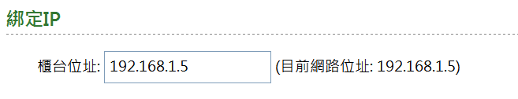

<h2>登入</h2>
<form action="logon.php" method="post">
電子信箱: <input type="text" name="facc" size="48" value=""><br>
登入密碼: <input type="password" name="fpwd" size="32" value=""><br>
<div class="submit"><input type="submit" value="登入"></div>
</form>

<h2>忘記密碼</h2>
<form action="re_password.php" method="post">
電子信箱: <input type="text" name="facc" size="48" value=""><br>
註冊序號: <input type="text" name="fkey" size="52" value=""><br>
<div class="submit"><input type="submit" value="重設"></div>
</form>

<h2>註冊</h2>
<form action="registration.php" method="post">
電子信箱: <input type="text" name="facc" size="48" value=""><br>
確認信箱: <input type="text" name="facc2" size="48" value=""><br>
登入密碼: <input type="password" name="fpwd" size="32" value=""><br>
確認密碼: <input type="password" name="fpwd2" size="32" value=""><br>
註冊序號: <input type="text" name="fkey" size="52" value=""><br>
<div class="submit"><input type="submit" value="註冊"></div>
</form>

<h2>驗證</h2>
<form action="verification.php" method="post">
電子信箱: <input type="text" name="facc" size="48" value=""><br>
驗證序號: <input type="text" name="fcode" size="12" value=""><br>
<div class="submit"><input type="submit" value="驗證"></div>
</form>

<h2>補發驗證</h2>
<form action="re_verification.php" method="post">
電子信箱: <input type="text" name="facc" size="48" value=""><br>
<div class="submit"><input type="submit" value="補發"></div>
</form>

<h2>客端程式架設說明</h2>
<ol class="setup">
<li>在櫃控主機上下載<a href="db4scc.rar">客端程式</a>, 壓縮檔解開到 D:\<br></li>
<li>雙擊<span class="key">db4scc.ini</span>進行設定<br></li>
<li><span class="key">MDB_FOLDER</span> 備份路徑(看下圖)<br><span class="key">CHECK_TIMER</span> 檢查間隔(分)<br></li>
<li>將<span class="key">db4scc.exe</span>拉出捷徑到<span class="key">啟動</span><br></li>
<li><span class="key">登入</span>設定櫃控主機的對外連線IP<br></li>
<li>執行 (按縮小會常駐在工作列右下角)<br></li>
</ol>